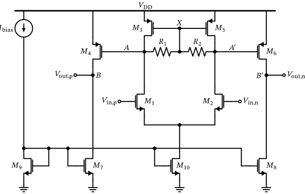
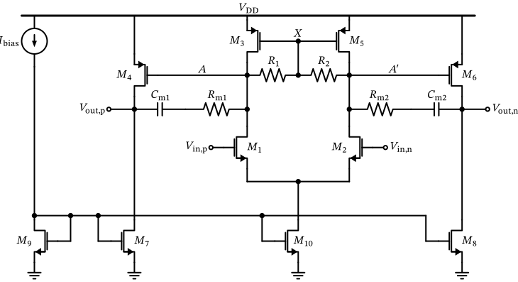
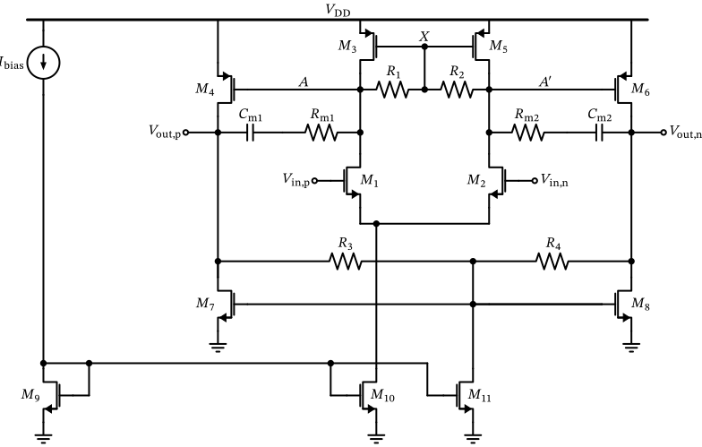
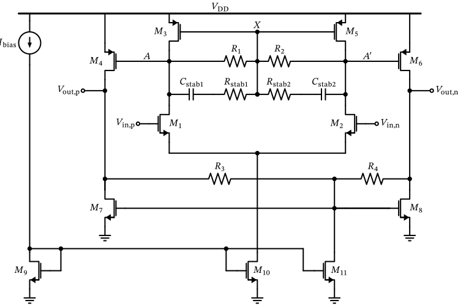
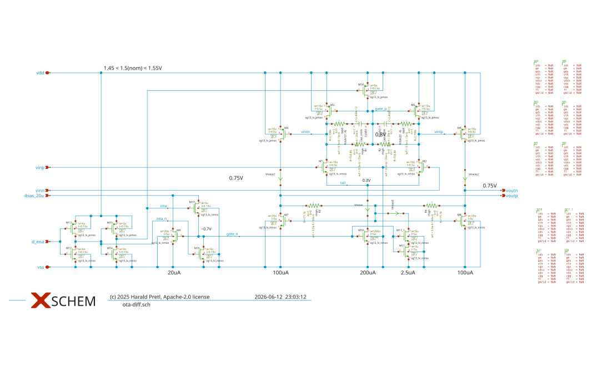
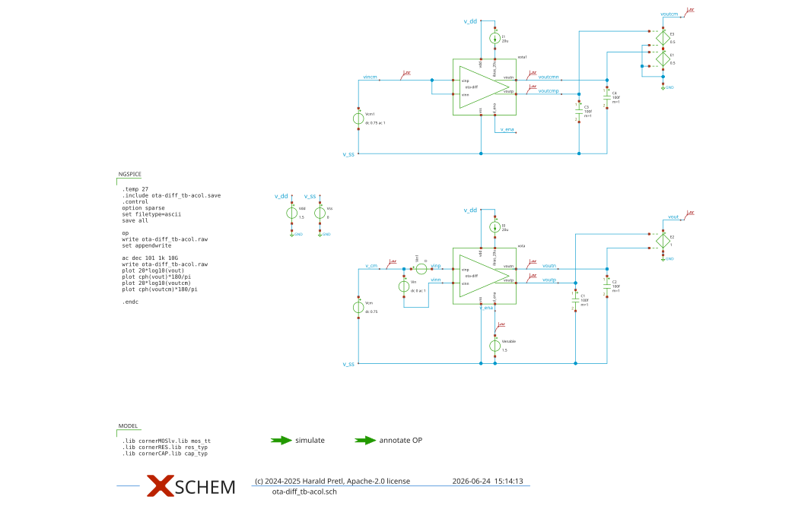
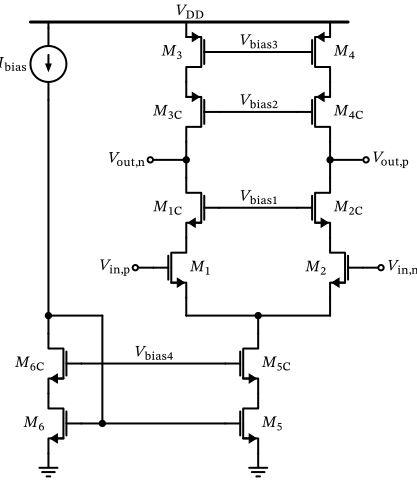
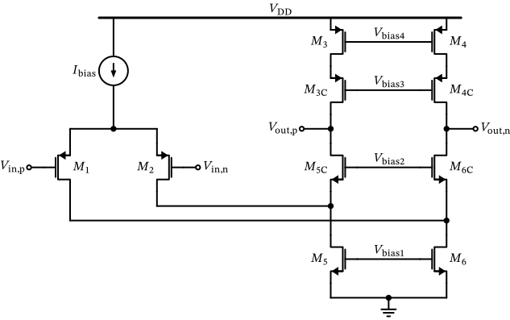

Differential OTAs

Figure 71: Differential two-stage OTA with resistive load.
So far, we have discussed the implementation of OTAs with a differential input and a single-ended output. Often, in integrated circuits, we want to implement fully differential signal chains, as this allows an almost-rail-to-rail swing around a common-mode voltage. Further, noise pickup due to limited power-supply rejection ratio (PSRR) or coupling into the differential signal routing can be suppressed by designing amplifiers with high common-mode rejection ratio (CMRR).
The OTA presented in Section 8.8 can be readily adapted for differential output. Striving for maximum utility, we are discussing a popular two-stage differential-output OTA with a special kind of load, shown in Figure 71 .
Miller Compensation
This OTA shows a load on top of the differential pair that we have not yet studied. It is instructive to analyze this structure in terms of differential and common-mode operation.
For common-mode operation (i.e., injecting the same current into the drain of \(M_3\) and \(M_4\) ) we have the same voltage at the drains of \(M_{3,5}\) , thus \(V_\mathrm{DS3}=V_\mathrm{DS5}\) . We have thus no current flowing through \(R_{1,2}\) and as a result \(V_\mathrm{DS3}=V_\mathrm{DS5} = V_\mathrm{X} = V_\mathrm{GS3} = V_\mathrm{GS5} = V_\mathrm{GS3,5}\) . We realize that \(M_3\) and \(M_5\) are diode-connected for common-mode operation. We thus have well-defined dc operating points, and also low common-mode gain, since each side of the circuit is then loaded by its own diode-connected transistor, i.e. the common-mode load per half circuit is \(g_\mathrm{m3,5}^{-1}\) (no current flows through \(R_{1,2}\) , so the resistors play no role here).
For pure differential operation, the mid-point \(X\) of \(R_{1,2}\) acts as a virtual ground. The bias voltage \(V_\mathrm{GS3,5}\) is thus not changed (it is set only by the common-mode operation) and thus \(M_3\) and \(M_5\) operate as current sources. The differential load impedance is high and is given by \(R_\mathrm{load} = (R_1 + R_2) \parallel (g_\mathrm{ds3}^{-1} + g_\mathrm{ds5}^{-1})\) .
In addition, we realize that \(V_\mathrm{GS4} = V_\mathrm{GS3} = V_\mathrm{GS5} = V_\mathrm{GS6}\) for common-mode operation, hence the quiescent current of \(M_{4,6}\) is set in a current-mirror-like fashion by the diode-connected \(M_{3,5}\) .
For differential operation, the differential pair of \(M_{1,2}\) is loaded by \(R_\mathrm{load}\) and provides fairly high gain. The second gain stage is formed by current-source-loaded common-source stages \(M_{4,6}\) and provides additional gain (of course, this is a function of the load impedance).
As soon as we implement a two-stage amplifier we need to look into stability. We likely have more than two poles, and in the case of the amplifier in Figure 71 we have a low-frequency pole at the drains of \(M_{1,3}\) and \(M_{2,5}\) and a further low-frequency pole at the output. Any additional pole will add further phase shift making stability critical. We now need a method to stabilize this amplifier and thus we will look into Miller compensation .
Of course, loop gain analysis of differential OTAs can and should be carried out. Exemplary testbenches where the loop gain is simulated with Middlebrook’s and Tian’s method can be found for the 5T-OTA and for the improved OTA ; the same approach carries over to the differential case, where the loop has to be broken in both the differential and the common-mode path.
Miller Compensation

Figure 72: Differential two-stage OTA with resistive load and Miller compensation.
A popular way to stabilize a multi-pole feedback-system is to make one pole dominant, and try to shift the other poles to sufficiently high frequencies (Mangelsdorf 2025a ) , that we have enough phase margin in the closed-loop system. We may strive for \(60^\circ\) as this will only cause a minor peaking in the frequency response (Gray et al. 2009 ) .
The question now is where to implement this dominant pole. In order to create a low-frequency pole we need a high-impedance point and a large capacitance. Placing just a large capacitor is unwelcome, as this causes large area consumption on chip.
Luckily, we know from the analysis in Section 17.1 that we can use voltage gain to increase the apparent value of a capacitor by feedback. Inspecting our circuit in Figure 71 we see that we have voltage gain from node \(A\) to node \(B\) and node \(A'\) and \(B'\) , respectively. This means we have an opportunity to strap a capacitor between those nodes, and create a dominant pole at node \(A\) (and \(A'\) ).
We can now add these so-called “Miller capacitors” to our circuit. The result is shown in Figure 72 . (We have also added resistors in series with the capacitors; we ignore these resistors for the time being).
Miller Compensation
Figure 73: Small-signal model of common-source stage with Miller compensation.
It is instructive to look at the small-signal equivalent circuit of the common-source stage \(M_4\) loaded by current-source \(M_7\) . The resulting model is shown in Figure 73 (we are ignoring the bulk effect of \(M_4\) , and lump components of \(M_{4,7}\) into the input and the output impedances formed by \(C_\mathrm{L}\) , \(C_\mathrm{in}\) , \(g_\mathrm{in}\) and \(g_\mathrm{out}\) ).
Miller Compensation
\[
I_\mathrm{in} + I_\mathrm{m} - V_\mathrm{gs} (s C_\mathrm{in} + g_\mathrm{in}) = 0
\tag{52}\]
\[
-I_\mathrm{m} - g_\mathrm{m}V_\mathrm{gs} - V_\mathrm{out} (s C_\mathrm{L} + g_\mathrm{out}) = 0
\tag{53}\]
In order to analyze the transfer function and thus the poles and zeros of this configuration we formulate KCL at the input and output node and the current through \(C_\mathrm{m}\) (we set \(R_\mathrm{m}=0\) for now):
Miller Compensation
\[
I_\mathrm{m} = s C_\mathrm{m} (V_\mathrm{out} - V_\mathrm{gs})
\tag{54}\]
\[
\frac{V_\mathrm{out}}{I_\mathrm{in}} = \frac{s C_\mathrm{m} - g_\mathrm{m}}{(s C_\mathrm{m} + s C_\mathrm{L} + g_\mathrm{out})(s C_\mathrm{m} + s C_\mathrm{in} + g_\mathrm{in}) - (s C_\mathrm{m} - g_\mathrm{m}) s C_\mathrm{m}}.
\tag{55}\]
Miller Compensation
\[
\frac{V_\mathrm{out}}{I_\mathrm{in}} = -\frac{g_\mathrm{m}}{(s C_\mathrm{L} + g_\mathrm{out})(s C_\mathrm{in} + g_\mathrm{in})} = -\frac{g_\mathrm{m}}{g_\mathrm{out} g_\mathrm{in}}
\frac{1}{\left( 1 + \frac{s C_\mathrm{L}}{g_\mathrm{out}} \right)}
\frac{1}{\left( 1 + \frac{s C_\mathrm{in}}{g_\mathrm{in}} \right)}
\tag{56}\]
\[
\frac{V_\mathrm{out}}{I_\mathrm{in}} = -\frac{g_\mathrm{m}}{g_\mathrm{out} g_\mathrm{in}}
\frac{\left( 1 - \frac{s C_\mathrm{m}}{g_\mathrm{m}} \right)}
{
\left( 1 + s \frac{C_\mathrm{L} + C_\mathrm{in} + \frac{C_\mathrm{in} C_\mathrm{L}}{C_\mathrm{m}}}{g_\mathrm{m}} \right)
\left( 1 + s \frac{C_\mathrm{m} \frac{g_\mathrm{m}}{g_\mathrm{out}}}{g_\mathrm{in}} \right)
}.
\tag{57}\]
We find that Equation 56 looks reasonable, as we have the correct dc gain of \(-g_\mathrm{m}/(g_\mathrm{out} g_\mathrm{in})\) and two poles, one at the input and one at the output.
We now return to the more interesting case of \(s C_\mathrm{m} \neq 0\) . We use the reasonable assumption that \(g_\mathrm{m}\gg g_\mathrm{in,out}\) to simplify the algebra and result in an interpretable result. After quite a few pages of algebraic manipulations (please try for yourself!) we arrive at
Looking at Equation 57 we can identify important changes compared to Equation 56 . We have the intended low-frequency pole \(s_\mathrm{p1}\) at the input where the capacitor \(C_\mathrm{m}\) is increased by the dc gain of the common-source stage \(g_\mathrm{m}/ g_\mathrm{out}\) :
Miller Compensation
\[
s_\mathrm{p1} = -\frac{g_\mathrm{in}}{C_\mathrm{m} \frac{g_\mathrm{m}}{g_\mathrm{out}}}
\]
\[
s_\mathrm{p2} = -\frac{g_\mathrm{m}}{C_\mathrm{L} + C_\mathrm{in} + \frac{C_\mathrm{in} C_\mathrm{L}}{C_\mathrm{m}}}
\]
We further have a high frequency pole \(s_\mathrm{p2}\) where the pole at the output has been shifted to higher frequencies! This is a very welcome effect called pole splitting , and it helps to stabilize the feedback system, as the nondominant (output) pole is shifted out in frequency while the dominant (input) pole is pulled in.
Together, the movement of poles \(s_\mathrm{p1}\) and \(s_\mathrm{p2}\) is a great deal in terms of stability. However, not all is rosy, as we have to also look at the numerator of Equation 57 . Here we see that a zero \(s_\mathrm{z}\) has been formed, unfortunately a quite bad one. Calculating its location as
Miller Compensation
\[
s_\mathrm{z} = +\frac{g_\mathrm{m}}{C_\mathrm{m}}
\tag{58}\]
\[
s_\mathrm{z} = \frac{g_\mathrm{m}}{C_\mathrm{m} (1 - g_\mathrm{m}R_\mathrm{m})}
\tag{59}\]
we see that it is located in the right half-plane of the s-domain. Such a zero, abbreviated as RHPZ, leads to a rise of the magnitude of the transfer function (this is generally not a bad thing), but the phase contribution of this zero is negative. This means that we are losing phase margin, yet we push available gain to higher frequencies; in other words, we are degrading phase- and gain-margin!
A circuit-level interpretation of this effect is that while the Miller capacitor is wanted at the input of the amplifier (i.e., the feedback path), it also allows the input signal to pass to the output (i.e., the forward path). Since in normal operation the signal is inverted and in feed-forward mode it is not we have this unwanted effect of phase shift. A more detailed analysis of this RHPZ can be found in (Mangelsdorf 2025b ) .
Luckily, there are several techniques to break the feed-forward path while keeping the feedback path (e.g., using a source follower to drive the output side of the Miller capacitor). For our purposes, we use a slightly simpler technique of adding a resistor in series to the Miller capacitor (see Figure 72 and Figure 73 ). By doing this, we can modify the location of this zero, and even push it into the left-half-plane. This is excellent news for stability, as now this zero helps to improve gain- and phase-margin!
Repeating the calculation of the transfer function \(V_\mathrm{out} / I_\mathrm{in}\) including \(R_\mathrm{m}\) we see that the zero location is changed and can be calculated as (the pole locations are also slightly changed due to the addition of \(R_\mathrm{m}\) , but we will not discuss the resulting equations here)
If we do not use the resistor (i.e., \(R_\mathrm{m}=0\) ) then Equation 59 collapses to Equation 58 . If \(g_\mathrm{m}R_\mathrm{m} < 1\) then the zero stays in the right half-plane; if \(g_\mathrm{m}R_\mathrm{m} > 1\) then the zero moves into the left half-plane (this is what we want). If \(g_\mathrm{m}R_\mathrm{m} = 1\) then we have compensated (i.e., removed) the zero; however, in practice exact compensation is not easy to establish across conditions, so we want to move the zero into the left half-plane. Adding a bit of margin, we want to size
Miller Compensation
\[
R_\mathrm{m} > \frac{2}{g_\mathrm{m}}.
\]
Common-Mode Regulation
Differential and Common-Mode Loops
When using an error amplifier to regulate a common-mode point keep in mind that you need to check the differential and common-mode stability of these various loops! This can lead to tricky situations, especially under large-signal excitation where the common-mode sensing might not work as expected!
In order to get a differential circuit stable one often has to make the common-mode loop faster than the differential loops. So simple, high-speed error amplifiers are an advantage.
In summary, stability investigations are critically important for differential circuits, and you should never forget to check for common-mode stability as well!
In fully-differential (i.e., differential inputs and outputs) OTAs, we have a new issue concerning common-mode voltage control: Depending on the feedback network around the OTA, we might or might not have a defined dc operating point (common-mode wise). Think of the following scenario: If we implement an integrator with an OTA, then the feedback network from output to input consists of a capacitor. This means that the output of the OTA is loaded very high ohmic, and any small current mismatch between \(M_4\) /\(M_7\) or \(M_6\) /\(M_8\) (see Figure 72 ) will cause a strong deviation of the dc operating point at the output!
We cannot accept that the dc operating points in a circuit are ill-defined. We thus need a way to establish the dc operating point. Using the diode-resistive load for the differential pair in Figure 72 the dc operating point there is well-defined by the diode-connected \(M_{3,5}\) . However, the output stage is different, and we need to add circuitry to also control the dc operating point there.
One well-known way is to sense the common-mode voltage using two resistors (similar to \(R_{1,2}\) in Figure 72 ), and compare this measured common-mode voltage to a reference voltage using an error amplifier. Then the output of the error amplifier controls the common-mode voltage, e.g., by driving the gates of \(M_{7,8}\) in Figure 72 .
Common-Mode Regulation

Figure 74: Differential two-stage OTA with resistive load, Miller compensation and output common-mode control.
Instead of a common-mode regulation loop (and all its complications regarding stability) often a common-mode setting is sufficient (after all, a somewhat imprecise setting of the dc points is good enough). A common-mode setting has the advantage that no error amplifier is required. We will also use this approach of a common-mode setting in the adapted differential OTA shown in Figure 74 .
Common-Mode Regulation
\[
V_\mathrm{out,cm} = V_\mathrm{GS7,8} + \frac{R_{3,4} I_\mathrm{D11}}{2}.
\]
\[
A_\mathrm{cm,1} \approx -\frac{1}{g_\mathrm{m3,5}} \cdot \frac{g_\mathrm{m1,2} g_\mathrm{ds10}}{2g_\mathrm{m1,2} + g_\mathrm{ds10}} \approx -\frac{g_\mathrm{ds10}}{2g_\mathrm{m3,5}}.
\tag{60}\]
Resistors \(R_{3,4}\) sense the output voltages and create a replica of the common-mode point (assuming \(R_3 = R_4\) ). This common-mode point is connected to the gates of \(M_{7,8}\) to essentially connect \(M_{7,8}\) like a diode (only for common-mode operation); in differential mode, \(M_7\) and \(M_8\) act as current source, like the load of the differential pair \(M_{3,5}\) . However, since we want to set the common-mode voltage at the output independently from \(V_\mathrm{GS7,8}\) we also pull a current through \(R_{3,4}\) to cause \(V_\mathrm{DS7,8} \neq V_\mathrm{GS7,8}\) ; essentially, this is a diode connection including a voltage shift! The output common-mode voltage is then given by
We can realize the advantage of using the resistor/MOSFET load in the input as well as the output stage when we calculate the common-mode gain of the OTA. We realize that we can use half-circuits due to the inherent symmetry of the circuit in Figure 71 . The gain of the first stage (the MOSFET-diode loaded differential pair \(M_{1,2}\) ) is given by (using Equation 13 )
The common-mode gain of the second stage is similarly given by
Common-Mode Regulation
\[
A_\mathrm{cm,2} \approx -\frac{g_\mathrm{m4,6}}{g_\mathrm{m7,8}}.
\tag{61}\]
\[
A_\mathrm{cm} = A_\mathrm{cm,1} \cdot A_\mathrm{cm,2} \approx \frac{g_\mathrm{ds10}}{2g_\mathrm{m7,8}}
\tag{62}\]
Combining Equation 60 and Equation 61 we arrive at (assuming that \(g_\mathrm{m3,5} \approx g_\mathrm{m4,6}\) )
which is a low common-mode gain with very likely \(A_\mathrm{cm} < 1\) , which is very good news for the common-mode stability!
Likewise, we can compute the differential gain of the OTA by formulating the voltage gain of the first stage as
Common-Mode Regulation
\[
A_\mathrm{d,1} \approx \frac{g_\mathrm{m1,2}}{R_{1,2}^{-1} + g_\mathrm{ds3,5} + g_\mathrm{ds1,2}}
\tag{63}\]
\[
A_\mathrm{d,2} = \frac{g_\mathrm{m4,6}}{R_{3,4}^{-1} + g_\mathrm{ds7,8} + g_\mathrm{ds4,6}}.
\tag{64}\]
and the differential voltage gain of the second stage as
Combining Equation 63 and Equation 64 , we arrive at the total differential voltage gain (of an unloaded OTA) of
Common-Mode Regulation
\[
A_\mathrm{d} = A_\mathrm{d,1} A_\mathrm{d,2} = \frac{g_\mathrm{m1,2} g_\mathrm{m4,6}}{(R_{1,2}^{-1} + g_\mathrm{ds3,5} + g_\mathrm{ds1,2})(R_{3,4}^{-1} + g_\mathrm{ds7,8} + g_\mathrm{ds4,6})}
\tag{65}\]
which can lead to significant differential voltage gain, ultimately limited by the \(g_\mathrm{ds}\) of the MOSFETs \(M_{1-8}\) .
Common-Mode Regulation
Modify Bias Points with Currents
Keep the technique shown in Figure 74 (using \(R_{3,4}\) and \(M_{11}\) ) in mind: You can always modify a bias point by injecting a dc current into a node, or by pulling a dc current out of a node (or do both to increase or lower the quiescent current through a resistor or transistor)! Since we likely have already current mirrors in the circuit it is usually a minor effort adding MOSFETs to create these bias currents.
Final Differential OTA

Figure 75: Differential two-stage OTA with adapted MOSFET-R load of first stage and output common-mode control by MOSFET-R load in second stage.
When designing the OTA with the above-mentioned techniques like Miller compensation and the common-mode setting, we find that we have issues with common-mode stability. There is one issue not obvious at first sight with the MOSFET-R load of the first stage: At the node \(X\) there is significant capacitance due to the gates of \(M_{3,5}\) . This capacitance forms a low-pass response with the resistance of \(R_{1,2}\) and thus creates a low-frequency pole. This pole is in the common-mode path, and leads to a zero for the common-mode gain.
In other words: At low frequencies, the common-mode gain is given by Equation 62 , but at higher frequencies (above the pole at node \(X\) ) the gates of \(M_{3,5}\) can no longer follow the drains, so these transistors stop acting as diodes and behave as current sources instead. The common-mode load of a half circuit consequently increases from \(g_\mathrm{m3,5}^{-1}\) to \(R_{1,2} \parallel g_\mathrm{ds3,5}^{-1}\) , and the common-mode gain increases significantly. We need to counteract this effect by adding a capacitor in parallel to \(R_{1,2}\) , as shown in Figure 75 . We use the opportunity to also add a series resistor to this capacitor to introduce an additional zero to improve phase margin.
Final Differential OTA

Figure 76: Differential OTA design in Xschem.
This OTA is sized for a considerably more demanding target than the voltage buffer of Section 8 , namely a gain-bandwidth product of \(\text{GBW} = 1\,\text{GHz}\) . You can find the sizing script for the differential OTA here , as well as the circuit-level design in Xschem here . The testbench for differential and common-mode gain analysis can be found here .
The final Xschem schematics of the differential OTA and the testbench are also shown in the figures below.
Final Differential OTA

Figure 77: Simulation testbench of the differential OTA design (DM and CM gain analysis).
Differential OTA Variants
As you can see when you run the simulation, the differential OTA is stable for differential and common-mode gain. However, the stabilization measures resulted in a GBW that falls considerably short of the target value of 1 GHz. Here we would need to start another round of optimization, either giving up some stability margin, or increasing the power dissipation, or using a more advanced topology.
Differential OTA Variants

Figure 78: The telescopic differential OTA (output common-mode regulation and biasing details are not shown).
For inspiration we want to discuss two further variants of the differential OTA. The first one is shown in Figure 78 and is a telescopic OTA. The telescopic OTA is a single-stage OTA and is the differential version of the single-ended OTA shown in Figure 58 . It shares its advantages and disadvantages: Stability is often not an issue (because it is single-stage), and the current consumption is low, as there is only one main current branch. The biggest disadvantage is the limited output swing, as we have to stack six MOSFETs on top of each other. Accounting for a minimum headroom per transistor of about 0.1 V, we require at least 0.6V, likely more in practice. This might be an issue in low-voltage designs.
Differential OTA Variants

Figure 79: The folded-cascode differential OTA (output common-mode regulation and biasing details are not shown).
Another very popular single-stage differential OTA is the so-called folded-cascode OTA , shown in Figure 79 . The folded-cascode OTA has a larger output swing than the telescopic OTA, as we only need to stack four MOSFETs on top of each other. However, the current consumption is higher, as we have three current branches (one for the input pair, and two for the differential cascode stage). The folded-cascode OTA is a very popular choice for high-gain, moderate-speed OTAs.